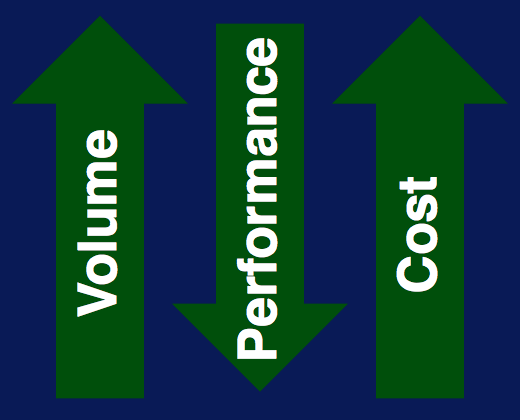
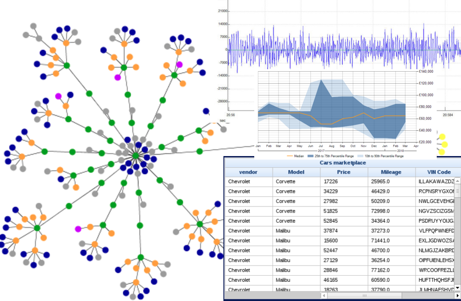

Características de Big Data
Publicado em:
@ericvinicius
Este é só o primeiro post de uma série de publicações sobre a área de Big Data que iremos lançar aqui no blog. Nessa série iremos mostrar como utilizamos o Big Data aqui no Elo7, entre outras características que foram muito importantes para a construção da nossa arquitetura atual.
Primeiramente... O que é Big Data?
Basicamente, um conjunto de dados que podem ser analisados computacionalmente para revelar padrões, tendências e associações. Aqui no Elo7 geramos métricas, e fazemos análises em cima destes dados, para validar novas features e/ou hipóteses.
6 V's
Dentre as várias características do Big Data, os que são considerados bem importantes são seus 6V's. É comum algumas pessoas falarem que existem mais do que 6, mas para este post vou focar nos 6 principais, são eles:
Volume
O Volume representa a quantidade de dados que temos, em MBs, GBs, TBs, etc. Ter um volume de dados muito grande pode ser um problema, pois aumenta muito o custo, tanto de storage para armazenar tudo isso, quanto na parte de processamento - afinal, com pouco processamento e um grande volume, qualquer tipo de análise será muito demorada. Sem falar no custo de tráfego de rede, caso seus dados estejam na nuvem. Por isso a compactação dos seus dados é bem importante (vamos fazer um post sobre os tipos de compactação de arquivo mais para frente). Aqui no Elo7 os nossos dados de análise compactados ocupam o espaço de aproximadamente 14TB, estes mesmos arquivos não compactados ocupariam aproximadamente 190TB.

Velocity
Velocity é basicamente a velocidade com que, capturamos informações, salvamos estas informações e as deixamos disponíveis para análise. Quanto mais rápido for isso, mais rápido poderemos detectar uma anomalia, como por exemplo, em um deploy. Mas com esta velocidade devemos tomar cuidado, pois pode existir um custo a mais para deixar estas informações disponíveis em "real-time". Dessa forma, é importante decidir quais informações realmente são necessárias em tempo real. Por exemplo, informações sobre as quantidades/valores de vendas do seu negócio fazem todo sentido serem analisados em tempo real, mas informações de qual cliente compra mais, pode não fazer. Além disso, as informações não "real-time", tem um tempo extra para serem filtradas quais são úteis. Algo que faz sentido é analisar a quantidade de acessos do seu site, mas será que faz sentido analisar em tempo real o acesso dos bots? Se formos filtrar isso dificilmente conseguiríamos ter uma análise "real-time".
Variety
A Variety é a heterogeneidade dos dados. Antigamente os dados eram guardados somente em tabelas, o que facilitava bastante as análises. Mas, hoje em dia, os dados são salvos em diversas formas diferentes, como grafo, imagens, sons etc. Isso causa diversos tipos de problemas, pois cada tipo destes tem uma forma de consumo ou de armazenamento diferente, o que torna bem difícil comparar essas informações (vamos abordar maneiras melhores de lidar com isso em posts futuros). Mas isso não quer dizer que não devemos salvar estas informações, pois elas podem ser úteis em algum momento no futuro.

Veracity
Veracity representa a assertividade dos nossos dados, o grau de certeza que temos sobre eles, então podemos até dizer que é a qualidade de nossos dados. Muitas vezes está ligado à procedência de nossos dados. Se a informação que estamos consumindo está vindo de um lugar que não é a fonte real do dado, pode ser que a qualidade do dado não seja das melhores. Por exemplo, ao analisar o click dos usuários no seu site, se formos capturar este dado no controller ou em um filter de nosso servidor, poderíamos capturar chamadas de outros sistemas, que na prática não são os clicks reais. Uma informação sem qualidade, não é confiável, e uma análise em cima desta informação pode gerar uma ação errada.
Valence
É a conectividade de dados, como eles estão ligados uns aos outros. Essa informação sobre o seu Big Data é importante, pois irá definir como serão feitas as suas análises. Se as suas informações estão quebradas por diversos dados, será necessário fazer "join" destes dados. Por exemplo, imagine um sistema dividido em microsserviços, onde cada requisição do usuário passa por diversos sistemas, para analisar o caminho do usário será necessário ligar os dados de todos estes sistemas, o que pode influenciar na velocidade em que seus dados estarão disponíveis para análise. Essa característica pode impactar onde nosso dado estará armazenado. Dessa forma, armazenar tudo isso em um banco que não permite "joins" pode não ser uma boa ideia, apesar de poder ser contornado de outras formas.
Value
Valor é o nosso objetivo, é o que tiramos do nosso Big Data. Regulando bem todos os outros 5Vs aumentaremos o nosso valor. Toda informação que tiramos de nosso Big Data, pode ou não ser útil, mas não quer dizer que devemos jogá-la fora, pois no futuro ela pode vir a ser útil, ou até mesmo em outro contexto.
Resumindo
Devemos estar atentos à esses 5V's:
- Volume -> Tamanho;
- Velocity -> Velocidade de novos dados, ou a de crescimento;
- Variety -> Variedade de tipos de dados que temos;
- Veracity -> nosso nível de confiança nos dados;
- Valence -> conectividade entre os dados.
Regulando bem estes 5V's chegaremos ao nosso 6˚V, o nosso objetivo, o Valor, para conseguirmos encontrar padrões, tendências e associações sobre nosso usuários, produtos e dados.